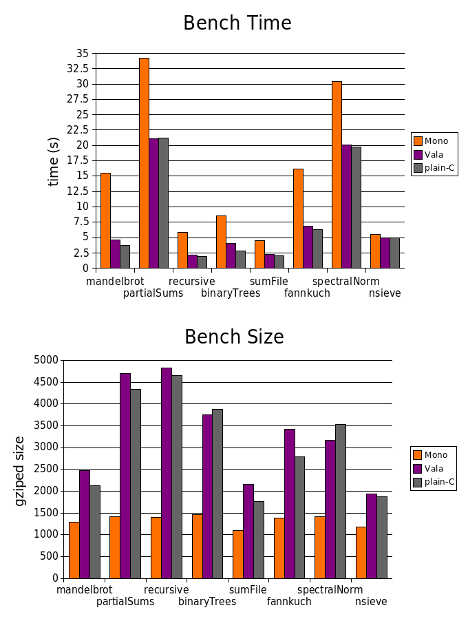

Vala Programming Language is a programme that use the GObject API. It represent another language to target a platform like C#/ECMA-CLI and Java/J2RE. We have now Vala/GObject.
After some discussion on the mailing-list and IRC, I think that there is a need to provide benchmarks : Vala vs C and C#.
UPDATE : As a work in progress, this project is now open to everyone at Google code.
After taking some time to make a complete structure of Makefile, I generate some beautiful benchmarks from the generated CSV file. There is now 8 benchmarks with very interesting results. I want to thanks Jürg Billeter for his help on some benchs.
The project is easy to understand. It can help you learning Vala basics.
Links:
The time results indicate are in seconds. For more informations, see the benchmarks rules.
Bench Name Mono Vala plain-C mandelbrot 15.50 4.63 3.74 partialSums 34.22 21.06 21.16 recursive 5.91 2.15 1.96 binaryTrees 8.55 4.02 2.81 sumFile 4.46 2.28 2.04 fannkuch 16.22 6.85 6.26 spectralNorm 30.40 20.07 19.78 nsieve 5.51 4.96 5.00
The size results come from : bash$ gzip -c program |wc -c > out.csv
Bench Name Mono Vala plain-C mandelbrot 1281 2465 2118 partialSums 1416 4701 4333 recursive 1397 4821 4652 binaryTrees 1461 3755 3876 sumFile 1094 2164 1767 fannkuch 1378 3425 2787 spectralNorm 1416 3162 3533 nsieve 1172 1939 1873
NOTE: Mono size is very small but you must add the size of the runtime :) : 679542
